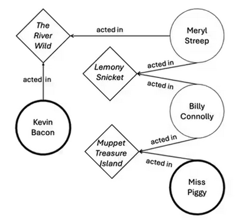

GraphX: procesamiento y análisis de grafos
INTRODUCCIÓN
GraphX es el módulo de Apache Spark orientado al procesamiento y análisis distribuido de grafos, disponible principalmente en Scala (y de forma más limitada en Java). Permite modelar grafos a gran escala y ejecutar algoritmos de análisis sobre ellos aprovechando el motor distribuido de Spark. GraphX se integra con el ecosistema de Spark mediante RDDs y facilita la construcción de pipelines donde la lógica de grafo puede convivir con fases de preparación y transformación de datos.
El análisis de grafos es especialmente relevante en dominios donde las relaciones entre entidades son tan importantes como las entidades en sí (por ejemplo, redes sociales, transacciones, dependencias entre sistemas, recomendación o detección de fraude).
CONTENIDO
Conceptos básicos: grafos en Big Data
Un grafo es una estructura compuesta por:
- Vértices (vertices): representan entidades (usuarios, cuentas, dispositivos, páginas, etc.).
- Aristas (edges): representan relaciones entre entidades (amistad, transferencia, enlace, dependencia, etc.).

Figura 1: Actores y su relación "actúa en" con la entidad Películas
En entornos Big Data, el modelado como grafo permite explotar patrones de conectividad y propagación, y habilita métricas estructurales que no son sencillas de obtener en modelos tabulares tradicionales.
En este enlace tienes más información sobre BBDD orientadas a Grafos
Aportación de GraphX dentro de Spark
GraphX aporta un modelo distribuido para grafos dentro de Spark que permite:
- Representar grafos a partir de colecciones distribuidas (RDDs).
- Aplicar operaciones de transformación sobre vértices y aristas (map, filter, joins).
- Ejecutar algoritmos clásicos de grafos (PageRank, componentes conexas, conteo de triángulos, etc.).
- Implementar computación iterativa eficiente mediante el modelo de propagación de mensajes inspirado en Pregel.
Dado que GraphX se ejecuta sobre Spark, hereda su escalabilidad, tolerancia a fallos, ejecución en clúster y capacidades de persistencia (cache/persist).
Modelo de datos en GraphX
Tipos principales- VertexId: identificador del vértice (típicamente un Long).
- VD (Vertex Data): tipo de dato asociado a un vértice (por ejemplo, nombre, categoría o score).
- ED (Edge Data): tipo asociado a una arista (por ejemplo, peso o tipo de relación).
Conceptualmente, GraphX utiliza:
RDD[(VertexId, VD)]para los vértices.RDD[Edge[ED]]para las aristas.
Ejemplo base en Scala:
import org.apache.spark.graphx._
import org.apache.spark.rdd.RDD
val vertices: RDD[(VertexId, String)] = sc.parallelize(Seq(
(1L, "A"), (2L, "B"), (3L, "C"), (4L, "D")
))
val edges: RDD[Edge[Int]] = sc.parallelize(Seq(
Edge(1L, 2L, 1),
Edge(2L, 3L, 1),
Edge(3L, 4L, 1),
Edge(1L, 4L, 1)
))
val graph: Graph[String, Int] = Graph(vertices, edges)Operaciones fundamentales (GraphX API)
GraphX proporciona operaciones para transformar y analizar grafos, de forma análoga a como se transforman colecciones distribuidas.
Transformación de atributos de vértices y aristasval g2 = graph.mapVertices { case (id, attr) => attr.toLowerCase }
val g3 = graph.mapEdges(e => e.attr + 10)Un subgrafo puede definirse filtrando aristas (y, de forma indirecta, vértices asociados):
val sub = graph.subgraph(epred = e => e.attr > 0)Los triplets ofrecen una vista combinada de vértice origen, arista y vértice destino, útil para cálculos que requieren información de ambos extremos de una relación.
graph.triplets.collect.foreach { t =>
println(s"${t.srcAttr} -> ${t.dstAttr} (w=${t.attr})")
}Algoritmos habituales en GraphX
GraphX incluye implementaciones de algoritmos clásicos de grafos orientados a métricas estructurales y conectividad.
PageRankPageRank calcula una métrica de “importancia” en grafos dirigidos basada en la estructura de enlaces. Es útil para ranking y recomendación.
val ranks = graph.pageRank(0.0001).verticesDetermina grupos de vértices que están conectados entre sí, lo que permite identificar comunidades o agrupaciones en redes.
val cc = graph.connectedComponents().verticesCuenta triángulos (subgrafos de tres nodos conectados entre sí), una métrica relevante en análisis de redes sociales y cohesión estructural.
val tc = graph.triangleCount().verticesDependiendo de la versión y utilidades disponibles, pueden existir implementaciones o ejemplos para rutas más cortas. Alternativamente, este tipo de algoritmos puede implementarse mediante el modelo iterativo Pregel, propagando distancias y actualizando estados de vértices.
Pregel en GraphX: computación iterativa por mensajes
Muchos algoritmos de grafos requieren múltiples iteraciones (por ejemplo, propagación de scores, distancias o etiquetas). GraphX incorpora un modelo inspirado en Pregel basado en intercambio de mensajes:
- Cada vértice mantiene un estado (atributo).
- En cada iteración (superstep), el vértice puede recibir mensajes, actualizar su estado y enviar nuevos mensajes a vecinos.
- El proceso termina al converger (no hay mensajes) o al alcanzar un número máximo de iteraciones.
Ejemplo conceptual (simplificado):
val initialMsg = 0
val gPregel = graph.pregel(initialMsg, maxIterations = 10)(
vprog = (id, attr, msg) => attr, // actualización del vértice con el mensaje
sendMsg = triplet => Iterator.empty, // envío de mensajes a vecinos
mergeMsg = (a, b) => a // combinación de mensajes
)Rendimiento: particionado, persistencia y skew
Dado que GraphX ejecuta sobre Spark, el rendimiento depende de factores habituales del procesamiento distribuido:
- Particionado: cómo se distribuyen vértices y aristas afecta al paralelismo y al coste de comunicación.
- Iteraciones: algoritmos iterativos multiplican el coste; conviene minimizar trabajo por iteración.
- Skew: presencia de “supernodos” (vértices con grado muy alto) puede concentrar carga en ciertas particiones.
- Persistencia: cache/persist reduce recomputaciones si el grafo se usa repetidamente.
Buenas prácticas habituales:
- Usar
cache()opersist()si se reutiliza el grafo en varias etapas o algoritmos. - Revisar particionado y distribución de grados para detectar desequilibrios.
- Reducir shuffles y operaciones costosas en fases previas de ETL del grafo.
- Evitar operaciones que requieran traer resultados masivos al driver.
Limitaciones de GraphX y alternativas
Aunque GraphX es una herramienta potente, presenta algunas limitaciones prácticas:
- API orientada principalmente a Scala; no existe un soporte equivalente nativo en PySpark.
- Se basa en un enfoque “RDD-centric”, lo que puede ser menos natural en pipelines modernos basados en DataFrames.
Como alternativa, en algunos proyectos se utiliza GraphFrames, una librería basada en DataFrames que facilita la integración con Spark SQL. También existen motores de grafos especializados (por ejemplo, bases de datos de grafos) que pueden ser apropiados según el caso.
CONCLUSIÓN
GraphX permite ejecutar análisis de grafos a gran escala dentro del ecosistema Spark, representando grafos como colecciones distribuidas y ofreciendo transformaciones y algoritmos listos para usar. Su modelo de computación iterativa basado en Pregel facilita la implementación de algoritmos que requieren propagación de información a través de relaciones.
GraphX resulta especialmente útil para explicar cómo se ejecutan algoritmos de grafos en un entorno distribuido, cómo influyen particionado y skew en el rendimiento, y cómo se aplican métricas estructurales para resolver problemas reales como detección de comunidades, ranking e identificación de patrones de conectividad.